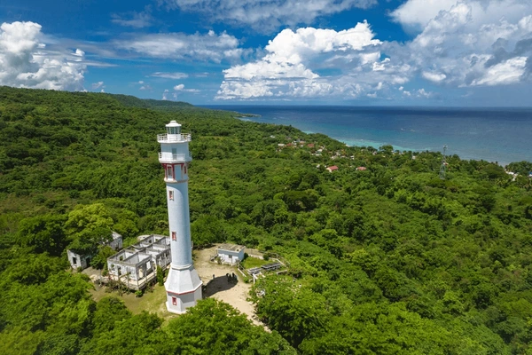

The Bolinao Lighthouse, also known as Cape Bolinao Lighthouse, is a historic maritime beacon located at Punta Piedra Point in Barangay Patar, Bolinao, Pangasinan, Philippines. Constructed in the early 1900s, it has long guided ships navigating the West Philippine Sea and remains a prominent landmark and tourist attraction in the region.
Fun Facts
- One of the tallest lighthouses in the Philippines.
- Still operational today.
- Offers panoramic sunset views.
Historical Background

Built under American administration around 1903–1905, the lighthouse was designed by a joint team of Filipino, British, and American engineers to assist vessels plying routes to Hong Kong, Japan, and the United States. The tower’s original third-order lens came from Chance Brothers in England, while its lantern was sourced from France. It initially ran on kerosene before being electrified in the 1980s and later upgraded with solar power in 1999.
Architecture
The lighthouse stands on Punta Piedra Point—Cape Bolinao’s highest elevation—providing a 360-degree view of Patar Beach and the West Philippine Sea. The cylindrical white tower with an octagonal base and double gallery once required climbing 134 steps to reach the illumination room. Its light is visible up to 32 km (20 mi) at sea, historically forming part of a network linking lighthouses from Zambales to Poro Point.
Preservation and Tourism
Although closed to interior access due to structural safety concerns, the Bolinao Lighthouse remains a key heritage site managed by the Philippine Coast Guard under the Adopt-A-Lighthouse Program, with preservation support from the local government. Visitors can explore the surrounding grounds and enjoy panoramic seaside views that make the site one of Pangasinan’s most photographed destinations.
Local fishermen share stories of how the lighthouse beam once guided them home safely during strong storms, becoming a symbol of hope and guidance.